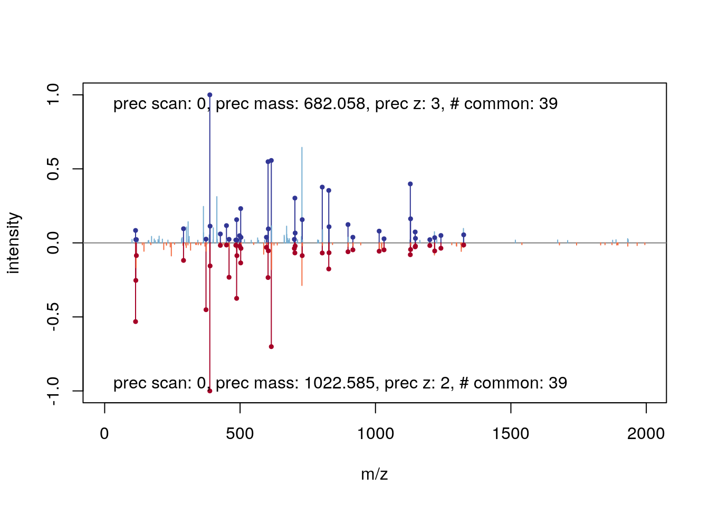
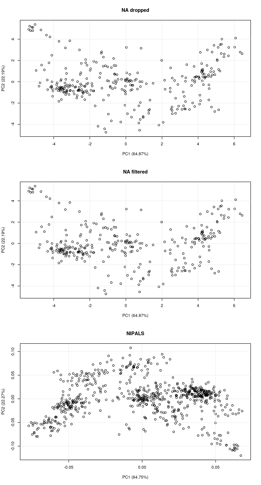

Chapter 7 Using R and Bioconductor for MS-based proteomics
7.1 Introduction
R and Bioconductor offer a range of dedicated packages for the analysis of mass spectrometry-based proteomics. The advantage of such technology-infrastructure is that offer specific behaviour for these kind of data.
The RforProteomics package provides a first introduction to what is available. It is also possible to navigate the biocViews hierarchy (these are tags that are used to describe individual package’s domain of action).
The highest level defines 3 types of packages:
- Software: packages providing a specific functionality.
- AnnotationData: packages providing annotations, such as various ontologies, species annotations, microarray annotations, …
- ExperimentData: packages distributing experiments.
The biocViews that are relevant here are Proteomcis, MassSpectrometry and MassSpectrometryData.
The biocViews page is available here
It is most easily accessed by clicking on the software packages link on the homepage, under About Bioconductor.

See also this page for additional information.
Here, we will focus on the MSnbase package, as it supports all types of MS-based proteomics data and files that one would generally encounter:
- Raw data
- Identification data
- Quantiative data
The respective types of data come in the form of
mzMLfiles (mzXMLandnetCDFare also supported)mzIdentMLfiles (abbreviatedmzid)- Arbitrary spreadsheets or
mzTabfiles
which can be read into R using
readMSDatareadMzIdDatareadMSnSet2orreadMzTabData
Once loaded in R, the data are stored as dedicated data structures
MSnExp(an MS experiment)data.frameMSnSet(an MS expression set)
##
##
## data file.type function. class
## --------------- ------------ -------------- -----------
## raw mzML readMSData MSnExp
## identification mzIdentML readMzIdData data.frame
## quantitation spreadsheet readMSnSet2 MSnSet
## quantitation mzTab readMzTabdata MSnSetTo start, let’s load the MSnbase package
library("MSnbase")We will make use of test data that is provided by the experiment package msdata, that we load below. We then extract the file names that will be used later on.
library("msdata")
rawf <- msdata::proteomics(full.names = TRUE, pattern = "20141210")
basename(rawf)## [1] "TMT_Erwinia_1uLSike_Top10HCD_isol2_45stepped_60min_01-20141210.mzML.gz"rawf2 <- file.path("data", basename(rawf))
file.copy(rawf, rawf2)## [1] TRUErawf2 <- R.utils::gunzip(rawf2)idf <- msdata::ident(full.names = TRUE)
basename(idf)## [1] "TMT_Erwinia_1uLSike_Top10HCD_isol2_45stepped_60min_01-20141210.mzid"7.2 Reading MS data into R
Raw data
rw <- readMSData(rawf2, mode = "onDisk")
rw## MSn experiment data ("OnDiskMSnExp")
## Object size in memory: 3.19 Mb
## - - - Spectra data - - -
## MS level(s): 1 2
## Number of spectra: 7534
## MSn retention times: 0:0 - 60:2 minutes
## - - - Processing information - - -
## Data loaded [Tue May 7 12:27:38 2019]
## MSnbase version: 2.10.0
## - - - Meta data - - -
## phenoData
## rowNames:
## TMT_Erwinia_1uLSike_Top10HCD_isol2_45stepped_60min_01-20141210.mzML
## varLabels: sampleNames
## varMetadata: labelDescription
## Loaded from:
## TMT_Erwinia_1uLSike_Top10HCD_isol2_45stepped_60min_01-20141210.mzML
## protocolData: none
## featureData
## featureNames: F1.S0001 F1.S0002 ... F1.S7534 (7534 total)
## fvarLabels: fileIdx spIdx ... spectrum (33 total)
## fvarMetadata: labelDescription
## experimentData: use 'experimentData(object)'chr <- chromatogram(rw)
chr## Chromatograms with 1 row and 1 column
## TMT_Erwinia_1uLSike_Top10HCD_isol2_45stepped_60min_01-20141210.mzML
## <Chromatogram>
## [1,] length: 1431
## phenoData with 1 variables
## featureData with 1 variablesIdentification data
id <- readMzIdData(idf)
id## sequence
## 1 RQCRTDFLNYLR
## 2 ESVALADQVTCVDWRNRKATKK
## 3 KELLCLAMQIIR
## 4 QRMARTSDKQQSIRFLERLCGR
## 5 KDEGSTEPLKVVRDMTDAICMLLR
## 6 DGGPAIYGHERVGRNAKKFKCLKFR
## 7 QRMARTSDKQQSIRFLERLCGR
## 8 CIDRARHVEVQIFGDGKGRVVALGERDCSLQRR
## 9 CIDRARHVEVQIFGDGKGRVVALGERDCSLQRR
## 10 VGRCRPIINYLASPGGTSER
## 11 WLYWSAVTRYPQCQLSLAQLDR
## 12 RLLCVTRWVLALR
## 13 RRCLVQVTR
## 14 LDRDASSHVAVTKIGLEKCARLIRLAIEGR
## 15 SKEDLLDIKNLVILPEVELTECAVLYR
## spectrumID chargeState rank
## 1 controllerType=0 controllerNumber=1 scan=2949 3 1
## 2 controllerType=0 controllerNumber=1 scan=6534 2 1
## 3 controllerType=0 controllerNumber=1 scan=5674 2 1
## 4 controllerType=0 controllerNumber=1 scan=4782 3 1
## 5 controllerType=0 controllerNumber=1 scan=5839 3 1
## 6 controllerType=0 controllerNumber=1 scan=6118 3 1
## 7 controllerType=0 controllerNumber=1 scan=4757 2 1
## 8 controllerType=0 controllerNumber=1 scan=6518 3 1
## 9 controllerType=0 controllerNumber=1 scan=6518 3 1
## 10 controllerType=0 controllerNumber=1 scan=6356 2 1
## 11 controllerType=0 controllerNumber=1 scan=5805 4 1
## 12 controllerType=0 controllerNumber=1 scan=2515 3 1
## 13 controllerType=0 controllerNumber=1 scan=1496 2 1
## 14 controllerType=0 controllerNumber=1 scan=4674 5 1
## 15 controllerType=0 controllerNumber=1 scan=4921 4 1
## passThreshold experimentalMassToCharge calculatedMassToCharge modNum
## 1 TRUE 548.2856 547.9474 1
## 2 TRUE 1288.1528 1288.1741 1
## 3 TRUE 744.4109 744.4255 1
## 4 TRUE 913.1642 912.8134 1
## 5 TRUE 926.8102 926.4713 1
## 6 TRUE 969.1943 968.8557 1
## 7 TRUE 1369.2380 1368.7166 1
## 8 TRUE 1285.3201 1285.0026 2
## 9 TRUE 1285.3201 1285.0026 2
## 10 TRUE 1102.0557 1102.0737 1
## 11 TRUE 689.3641 689.3510 1
## 12 TRUE 553.0107 552.6678 1
## 13 TRUE 594.3362 594.3431 1
## 14 TRUE 670.3866 670.3796 1
## 15 TRUE 793.9449 793.9348 1
## isDecoy post pre start end DatabaseAccess DBseqLength DatabaseSeq
## 1 FALSE V R 574 585 ECA2006 1295
## 2 FALSE G R 69 90 ECA1676 110
## 3 TRUE Q R 131 142 XXX_ECA2855 157
## 4 FALSE D R 182 203 ECA3009 437
## 5 TRUE R R 135 158 XXX_ECA0048 501
## 6 FALSE S K 310 334 ECA1420 477
## 7 FALSE D R 182 203 ECA3009 437
## 8 FALSE N R 201 233 ECA2142 1204
## 9 FALSE N R 201 233 ECA2142 1204
## 10 FALSE L R 121 140 ECA0331 210
## 11 TRUE P R 17 38 XXX_ECA0907 220
## 12 TRUE A R 2 14 XXX_ECA0083 247
## 13 TRUE E R 554 562 XXX_ECA2656 757
## 14 TRUE N K 409 438 XXX_ECA0260 447
## 15 TRUE D R 183 209 XXX_ECA3965 349
## DatabaseDescription
## 1 ECA2006 ATP-dependent helicase
## 2 ECA1676 putative growth inhibitory protein
## 3
## 4 ECA3009 putative coproporphyrinogen oxidase
## 5
## 6 ECA1420 undecaprenyl-phosphate galactosephosphotransferase
## 7 ECA3009 putative coproporphyrinogen oxidase
## 8 ECA2142 urea amidolyase
## 9 ECA2142 urea amidolyase
## 10 ECA0331 ADP-ribose pyrophosphatase
## 11
## 12
## 13
## 14
## 15
## scan.number.s. acquisitionNum
## 1 2949 2949
## 2 6534 6534
## 3 5674 5674
## 4 4782 4782
## 5 5839 5839
## 6 6118 6118
## 7 4757 4757
## 8 6518 6518
## 9 6518 6518
## 10 6356 6356
## 11 5805 5805
## 12 2515 2515
## 13 1496 1496
## 14 4674 4674
## 15 4921 4921
## spectrumFile
## 1 TMT_Erwinia_1uLSike_Top10HCD_isol2_45stepped_60min_01-20141210.mzML
## 2 TMT_Erwinia_1uLSike_Top10HCD_isol2_45stepped_60min_01-20141210.mzML
## 3 TMT_Erwinia_1uLSike_Top10HCD_isol2_45stepped_60min_01-20141210.mzML
## 4 TMT_Erwinia_1uLSike_Top10HCD_isol2_45stepped_60min_01-20141210.mzML
## 5 TMT_Erwinia_1uLSike_Top10HCD_isol2_45stepped_60min_01-20141210.mzML
## 6 TMT_Erwinia_1uLSike_Top10HCD_isol2_45stepped_60min_01-20141210.mzML
## 7 TMT_Erwinia_1uLSike_Top10HCD_isol2_45stepped_60min_01-20141210.mzML
## 8 TMT_Erwinia_1uLSike_Top10HCD_isol2_45stepped_60min_01-20141210.mzML
## 9 TMT_Erwinia_1uLSike_Top10HCD_isol2_45stepped_60min_01-20141210.mzML
## 10 TMT_Erwinia_1uLSike_Top10HCD_isol2_45stepped_60min_01-20141210.mzML
## 11 TMT_Erwinia_1uLSike_Top10HCD_isol2_45stepped_60min_01-20141210.mzML
## 12 TMT_Erwinia_1uLSike_Top10HCD_isol2_45stepped_60min_01-20141210.mzML
## 13 TMT_Erwinia_1uLSike_Top10HCD_isol2_45stepped_60min_01-20141210.mzML
## 14 TMT_Erwinia_1uLSike_Top10HCD_isol2_45stepped_60min_01-20141210.mzML
## 15 TMT_Erwinia_1uLSike_Top10HCD_isol2_45stepped_60min_01-20141210.mzML
## idFile
## 1 TMT_Erwinia_1uLSike_Top10HCD_isol2_45stepped_60min_01-20141210.mzid
## 2 TMT_Erwinia_1uLSike_Top10HCD_isol2_45stepped_60min_01-20141210.mzid
## 3 TMT_Erwinia_1uLSike_Top10HCD_isol2_45stepped_60min_01-20141210.mzid
## 4 TMT_Erwinia_1uLSike_Top10HCD_isol2_45stepped_60min_01-20141210.mzid
## 5 TMT_Erwinia_1uLSike_Top10HCD_isol2_45stepped_60min_01-20141210.mzid
## 6 TMT_Erwinia_1uLSike_Top10HCD_isol2_45stepped_60min_01-20141210.mzid
## 7 TMT_Erwinia_1uLSike_Top10HCD_isol2_45stepped_60min_01-20141210.mzid
## 8 TMT_Erwinia_1uLSike_Top10HCD_isol2_45stepped_60min_01-20141210.mzid
## 9 TMT_Erwinia_1uLSike_Top10HCD_isol2_45stepped_60min_01-20141210.mzid
## 10 TMT_Erwinia_1uLSike_Top10HCD_isol2_45stepped_60min_01-20141210.mzid
## 11 TMT_Erwinia_1uLSike_Top10HCD_isol2_45stepped_60min_01-20141210.mzid
## 12 TMT_Erwinia_1uLSike_Top10HCD_isol2_45stepped_60min_01-20141210.mzid
## 13 TMT_Erwinia_1uLSike_Top10HCD_isol2_45stepped_60min_01-20141210.mzid
## 14 TMT_Erwinia_1uLSike_Top10HCD_isol2_45stepped_60min_01-20141210.mzid
## 15 TMT_Erwinia_1uLSike_Top10HCD_isol2_45stepped_60min_01-20141210.mzid
## MS.GF.RawScore MS.GF.DeNovoScore MS.GF.SpecEValue MS.GF.EValue
## 1 10 101 4.617121e-08 0.1321981
## 2 12 121 7.255875e-08 0.2087481
## 3 8 74 9.341019e-08 0.2674533
## 4 -5 160 1.270731e-07 0.3655833
## 5 8 241 1.318240e-07 0.3794606
## 6 7 214 1.722033e-07 0.4958171
## 7 21 196 1.768402e-07 0.5087610
## 8 -31 165 1.804546e-07 0.5203928
## 9 -31 165 1.804546e-07 0.5203928
## 10 -3 59 1.876694e-07 0.5395786
## 11 8 164 2.052351e-07 0.5904518
## 12 45 165 2.235413e-07 0.6405448
## 13 29 119 2.291453e-07 0.6539968
## 14 -11 138 2.401211e-07 0.6921004
## 15 28 294 2.580819e-07 0.7434267
## MS.GF.QValue MS.GF.PepQValue modName modMass modLocation
## 1 0.5254237 0.5490196 Carbamidomethyl 57.02146 3
## 2 0.6103896 0.6231884 Carbamidomethyl 57.02146 11
## 3 0.6250000 0.6363636 Carbamidomethyl 57.02146 5
## 4 0.7169811 0.7244898 Carbamidomethyl 57.02146 20
## 5 0.7363637 0.7450980 Carbamidomethyl 57.02146 20
## 6 0.8370370 0.8560000 Carbamidomethyl 57.02146 21
## 7 0.8370370 0.7244898 Carbamidomethyl 57.02146 20
## 8 0.8370370 0.8560000 Carbamidomethyl 57.02146 1
## 9 0.8370370 0.8560000 Carbamidomethyl 57.02146 28
## 10 0.8370370 0.8560000 Carbamidomethyl 57.02146 4
## 11 0.8785715 0.8901099 Carbamidomethyl 57.02146 13
## 12 0.9006211 0.8901099 Carbamidomethyl 57.02146 4
## 13 0.9006211 0.8901099 Carbamidomethyl 57.02146 3
## 14 0.9006211 0.8901099 Carbamidomethyl 57.02146 19
## 15 0.9006211 0.8901099 Carbamidomethyl 57.02146 22
## subOriginalResidue subReplacementResidue subLocation
## 1 <NA> <NA> NA
## 2 <NA> <NA> NA
## 3 <NA> <NA> NA
## 4 <NA> <NA> NA
## 5 <NA> <NA> NA
## 6 <NA> <NA> NA
## 7 <NA> <NA> NA
## 8 <NA> <NA> NA
## 9 <NA> <NA> NA
## 10 <NA> <NA> NA
## 11 <NA> <NA> NA
## 12 <NA> <NA> NA
## 13 <NA> <NA> NA
## 14 <NA> <NA> NA
## 15 <NA> <NA> NA
## [ reached 'max' / getOption("max.print") -- omitted 5787 rows ]fvarLabels(rw)## [1] "fileIdx" "spIdx"
## [3] "smoothed" "seqNum"
## [5] "acquisitionNum" "msLevel"
## [7] "polarity" "originalPeaksCount"
## [9] "totIonCurrent" "retentionTime"
## [11] "basePeakMZ" "basePeakIntensity"
## [13] "collisionEnergy" "ionisationEnergy"
## [15] "lowMZ" "highMZ"
## [17] "precursorScanNum" "precursorMZ"
## [19] "precursorCharge" "precursorIntensity"
## [21] "mergedScan" "mergedResultScanNum"
## [23] "mergedResultStartScanNum" "mergedResultEndScanNum"
## [25] "injectionTime" "filterString"
## [27] "spectrumId" "centroided"
## [29] "ionMobilityDriftTime" "isolationWindowTargetMZ"
## [31] "isolationWindowLowerOffset" "isolationWindowUpperOffset"
## [33] "spectrum"rw <- addIdentificationData(rw, idf)
fvarLabels(rw)## [1] "fileIdx" "spIdx"
## [3] "smoothed" "seqNum"
## [5] "acquisitionNum" "msLevel"
## [7] "polarity" "originalPeaksCount"
## [9] "totIonCurrent" "retentionTime"
## [11] "basePeakMZ" "basePeakIntensity"
## [13] "collisionEnergy" "ionisationEnergy"
## [15] "lowMZ" "highMZ"
## [17] "precursorScanNum" "precursorMZ"
## [19] "precursorCharge" "precursorIntensity"
## [21] "mergedScan" "mergedResultScanNum"
## [23] "mergedResultStartScanNum" "mergedResultEndScanNum"
## [25] "injectionTime" "filterString"
## [27] "spectrumId" "centroided"
## [29] "ionMobilityDriftTime" "isolationWindowTargetMZ"
## [31] "isolationWindowLowerOffset" "isolationWindowUpperOffset"
## [33] "spectrum" "acquisition.number"
## [35] "sequence" "chargeState"
## [37] "rank" "passThreshold"
## [39] "experimentalMassToCharge" "calculatedMassToCharge"
## [41] "modNum" "isDecoy"
## [43] "post" "pre"
## [45] "start" "end"
## [47] "DatabaseAccess" "DBseqLength"
## [49] "DatabaseSeq" "DatabaseDescription"
## [51] "scan.number.s." "idFile"
## [53] "MS.GF.RawScore" "MS.GF.DeNovoScore"
## [55] "MS.GF.SpecEValue" "MS.GF.EValue"
## [57] "MS.GF.QValue" "MS.GF.PepQValue"
## [59] "modName" "modMass"
## [61] "modLocation" "subOriginalResidue"
## [63] "subReplacementResidue" "subLocation"
## [65] "nprot" "npep.prot"
## [67] "npsm.prot" "npsm.pep"Quantitative data
library("pRolocdata")
qtf <- dir(system.file("extdata", package = "pRolocdata"),
full.names = TRUE,
pattern = "Dunkley2006")
basename(qtf)## [1] "Dunkley2006.csv.gz"qt <- readMSnSet2(qtf, ecol = 5:20)
qt## MSnSet (storageMode: lockedEnvironment)
## assayData: 689 features, 16 samples
## element names: exprs
## protocolData: none
## phenoData: none
## featureData
## featureNames: 1 2 ... 689 (689 total)
## fvarLabels: Protein.ID Loc.Predicted ... pd.markers (6 total)
## fvarMetadata: labelDescription
## experimentData: use 'experimentData(object)'
## Annotation:
## - - - Processing information - - -
## MSnbase version: 2.10.07.3 Manipulating and visualising raw data
plot(chr)rawf3 <- proteomics(full.names = TRUE, pattern = "MS3TMT11")
basename(rawf3)## [1] "MS3TMT11.mzML"rw <- readMSData(rawf3, mode = "onDisk")
rw## MSn experiment data ("OnDiskMSnExp")
## Object size in memory: 0.53 Mb
## - - - Spectra data - - -
## MS level(s): 1 2 3
## Number of spectra: 994
## MSn retention times: 45:27 - 47:6 minutes
## - - - Processing information - - -
## Data loaded [Tue May 7 12:27:43 2019]
## MSnbase version: 2.10.0
## - - - Meta data - - -
## phenoData
## rowNames: MS3TMT11.mzML
## varLabels: sampleNames
## varMetadata: labelDescription
## Loaded from:
## MS3TMT11.mzML
## protocolData: none
## featureData
## featureNames: F1.S001 F1.S002 ... F1.S994 (994 total)
## fvarLabels: fileIdx spIdx ... spectrum (33 total)
## fvarMetadata: labelDescription
## experimentData: use 'experimentData(object)'table(centroided(rw), msLevel(rw))##
## 1 2 3
## FALSE 30 0 0
## TRUE 0 482 482head(acquisitionNum(rw))## F1.S001 F1.S002 F1.S003 F1.S004 F1.S005 F1.S006
## 21945 21946 21947 21948 21949 21950i <- 21945
rw2 <- filterPrecursorScan(rw, 21945)
rw2## MSn experiment data ("OnDiskMSnExp")
## Object size in memory: 0.05 Mb
## - - - Spectra data - - -
## MS level(s): 1 2 3
## Number of spectra: 35
## MSn retention times: 45:27 - 45:30 minutes
## - - - Processing information - - -
## Data loaded [Tue May 7 12:27:43 2019]
## Filter: select parent/children scans for 21945 [Tue May 7 12:27:43 2019]
## MSnbase version: 2.10.0
## - - - Meta data - - -
## phenoData
## rowNames: MS3TMT11.mzML
## varLabels: sampleNames
## varMetadata: labelDescription
## Loaded from:
## MS3TMT11.mzML
## protocolData: none
## featureData
## featureNames: F1.S001 F1.S002 ... F1.S035 (35 total)
## fvarLabels: fileIdx spIdx ... spectrum (33 total)
## fvarMetadata: labelDescription
## experimentData: use 'experimentData(object)'rw2[[1]]## Object of class "Spectrum1"
## Retention time: 45:27
## MSn level: 1
## Total ion count: 10768
## Polarity: 1plot(rw[[1]])rw2[[3]]## Object of class "Spectrum2"
## Precursor: 599.7978
## Retention time: 45:27
## Charge: 2
## MSn level: 2
## Peaks count: 630
## Total ion count: 4263413plot(rw2[[3]], full = TRUE)rw2[[4]]## Object of class "Spectrum2"
## Precursor: 452.2501
## Retention time: 45:27
## Charge: 2
## MSn level: 3
## Peaks count: 283
## Total ion count: 58042870plot(rw2[[4]], reporters = TMT11)7.4 MS maps
basename(rawf2)## [1] "TMT_Erwinia_1uLSike_Top10HCD_isol2_45stepped_60min_01-20141210.mzML"rw <- readMSData(rawf2, mode = "onDisk")
## indeices of MS1 with retention times 30 - 35
ms1 <- which(msLevel(rw) == 1)
rtsel <- rtime(rw)[ms1] / 60 > 30 &
rtime(rw)[ms1] / 60 < 35
M <- MSmap(rw, scans = ms1[rtsel],
lowMz = 521, highMz = 523,
resMz = .005)plot(M, aspect = 1, allTicks = FALSE)plot3D(M)
i <- ms1[which(rtsel)][1]
j <- ms1[which(rtsel)][2]
M2 <- MSmap(rw, i:j, 100, 1000, 1)
plot3D(M2)
It is then possible to build maps for successive retention times or M/Z ranges and generate animations (see here) for code).


7.5 Extracted ion chromatograms
library("MSnbase")
library("msdata")
library("magrittr")
fl <- dir(system.file("sciex", package = "msdata"), full.names = TRUE)[2]
basename(fl)## [1] "20171016_POOL_POS_3_105-134.mzML"data_prof <- readMSData(fl, mode = "onDisk", centroided = FALSE)## Define the mz and retention time ranges
serine_mz <- 106.049871
mzr <- c(serine_mz - 0.01, serine_mz + 0.01)
rtr <- c(175, 187)
## Filtering the object
serine <- data_prof %>%
filterRt(rtr) %>%
filterMz(mzr)plot(serine, type = "XIC")
abline(h = serine_mz, col = "red", lty = 2)
abline(v = rtime(serine)[22], lty = 2)plot(serine[[22]])
data_cent <- data_prof %>%
pickPeaks()
serine_cent <- data_cent %>%
filterRt(rtr) %>%
filterMz(mzr)
## Plot the centroided data for serine
plot(serine_cent, type = "XIC")
abline(h = serine_mz, col = "red", lty = 2)For more details, see the MSnbase: centroiding of profile-mode MS data vignette.
7.6 Peptide spetrum matches
data(itraqdata)
itraqdata <- pickPeaks(itraqdata)
i <- 14
s <- as.character(fData(itraqdata)[i, "PeptideSequence"])
calculateFragments(s)## mz ion type pos z seq
## 1 88.03931 b1 b 1 1 S
## 2 201.12337 b2 b 2 1 SI
## 3 258.14483 b3 b 3 1 SIG
## 4 405.21324 b4 b 4 1 SIGF
## 5 534.25583 b5 b 5 1 SIGFE
## 6 591.27729 b6 b 6 1 SIGFEG
## 7 706.30423 b7 b 7 1 SIGFEGD
## 8 793.33626 b8 b 8 1 SIGFEGDS
## 9 906.42032 b9 b 9 1 SIGFEGDSI
## 10 963.44178 b10 b 10 1 SIGFEGDSIG
## 11 175.11895 y1 y 1 1 R
## 12 232.14041 y2 y 2 1 GR
## 13 345.22447 y3 y 3 1 IGR
## 14 432.25650 y4 y 4 1 SIGR
## 15 547.28344 y5 y 5 1 DSIGR
## 16 604.30490 y6 y 6 1 GDSIGR
## 17 733.34749 y7 y 7 1 EGDSIGR
## 18 880.41590 y8 y 8 1 FEGDSIGR
## 19 937.43736 y9 y 9 1 GFEGDSIGR
## 20 1050.52142 y10 y 10 1 IGFEGDSIGR
## 21 873.42266 b9_ b_ 9 1 SIGFEGDSI
## 22 930.44412 b10_ b_ 10 1 SIGFEGDSIG
## 23 514.28579 y5_ y_ 5 1 DSIGR
## 24 571.30725 y6_ y_ 6 1 GDSIGR
## 25 700.34984 y7_ y_ 7 1 EGDSIGR
## 26 847.41825 y8_ y_ 8 1 FEGDSIGR
## 27 904.43971 y9_ y_ 9 1 GFEGDSIGR
## 28 1017.52377 y10_ y_ 10 1 IGFEGDSIGR
## 29 142.12130 y1_ y_ 1 1 R
## 30 199.14276 y2_ y_ 2 1 GR
## 31 312.22682 y3_ y_ 3 1 IGR
## 32 399.25885 y4_ y_ 4 1 SIGRplot(itraqdata[[i]], s, main = s)plot(itraqdata[[41]], itraqdata[[42]])
See also the protViz package for MS2 spectra annotation and visualisation.
The MSGFgui package provides an interactive interface to navigate and investigate identification data using interactive plots, summary statistics and filtering.

7.7 MS imaging
There are (at least) two packages, namely and Cardinal (web site)

Cardinal imaging
and MALDIquant
MALDIquant imaging - try the shiny app
that support MS imaging.
7.8 Missing values
data(naset)
image2(naset)
image2(is.na(naset), col = c("black", "white"))
naplot(naset)7.9 PCA plots
par(mfrow = c(2, 1))
plot2D(hyperLOPIT2015, main = "Spatial proteomics - features")
addLegend(hyperLOPIT2015, where = "bottomleft", cex = .5)
plot2D(t(mulvey2015norm), fcol = "times", main = "Time course - samples")
addLegend(t(mulvey2015norm), where = "bottomright", fcol = "times")
par(mfrow = c(3, 1))
plot2D(naset, fcol = NULL, col = "black", main = "NA dropped")## Removed 388 row(s) with 'NA' values.
## Consider using 'nipals' to retain all features.plot2D(filterNA(naset), fcol = NULL, col = "black", main = "NA filtered")
plot2D(naset, fcol = NULL, col = "black", method = "nipals", main = "NIPALS")## Loading required namespace: nipals